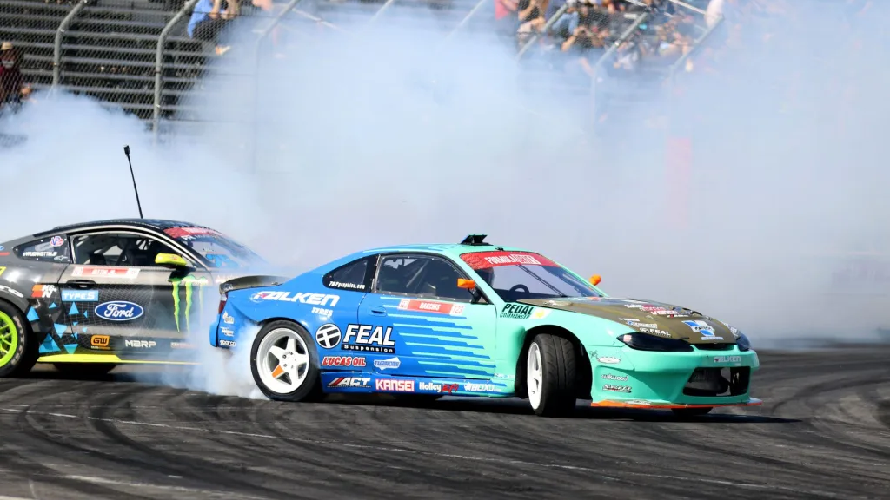
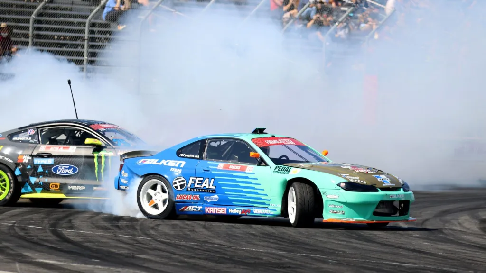
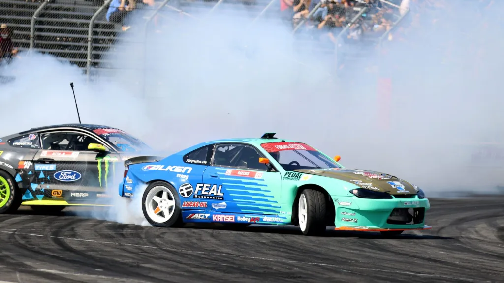
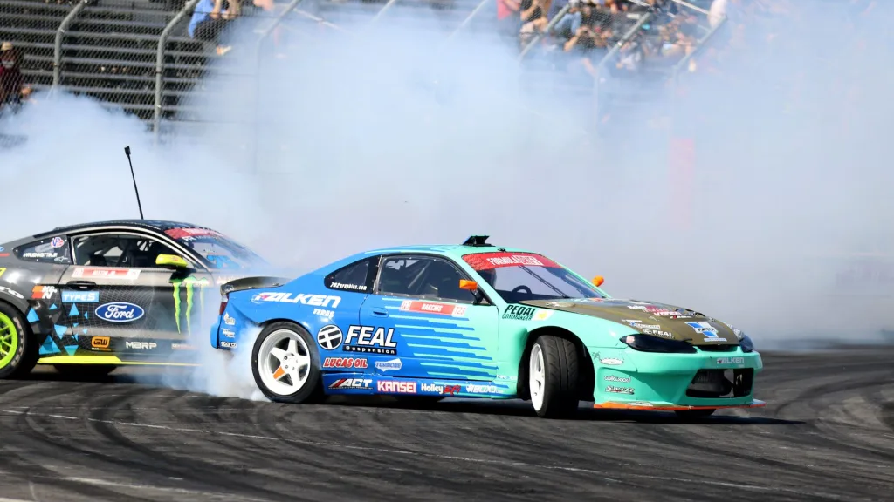

.jpg)
 



Drifting is a driving technique where the driver intentionally oversteers, with loss of traction, while maintaining control and driving the car through the entirety of a corner. The technique causes the rear slip angle to exceed the front slip angle to such an extent that often the front wheels are pointing in the opposite direction to the turn (e.g. car is turning left, wheels are pointed right or vice versa, also known as opposite lock or counter-steering). Drifting is traditionally done by clutch kicking (where the clutch is rapidly disengaged and re-engaged with the intention of upsetting the grip of the rear wheels), then intentionally oversteering and countersteering. This sense of drift is not to be confused with the four wheel drift, a classic cornering technique established in Grand Prix and sports car racing.
As a motoring discipline, drifting competitions were first popularized in Japan in the 1970s and further popularized by the 1995 manga series Initial D. Drifting competitions are held worldwide and are judged according to the speed, angle, showmanship, and line taken through a corner or set of corners.